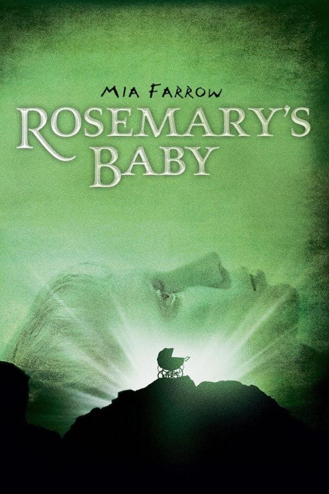
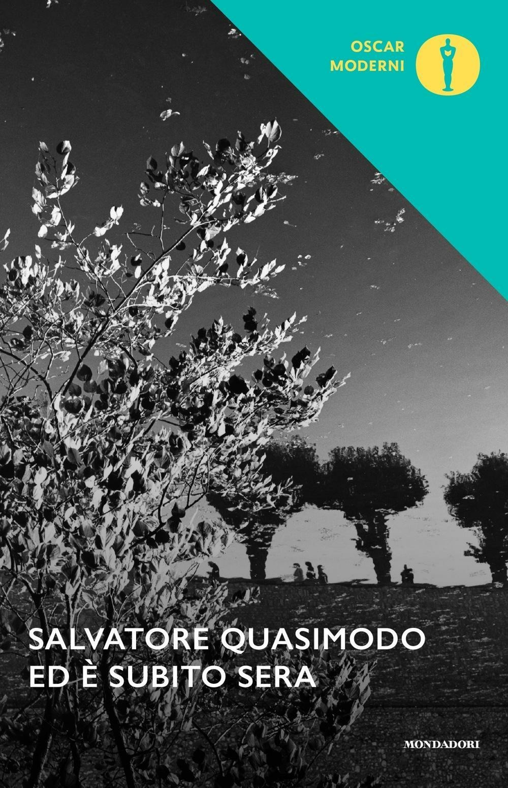
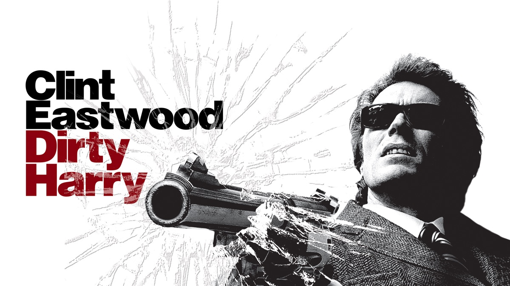
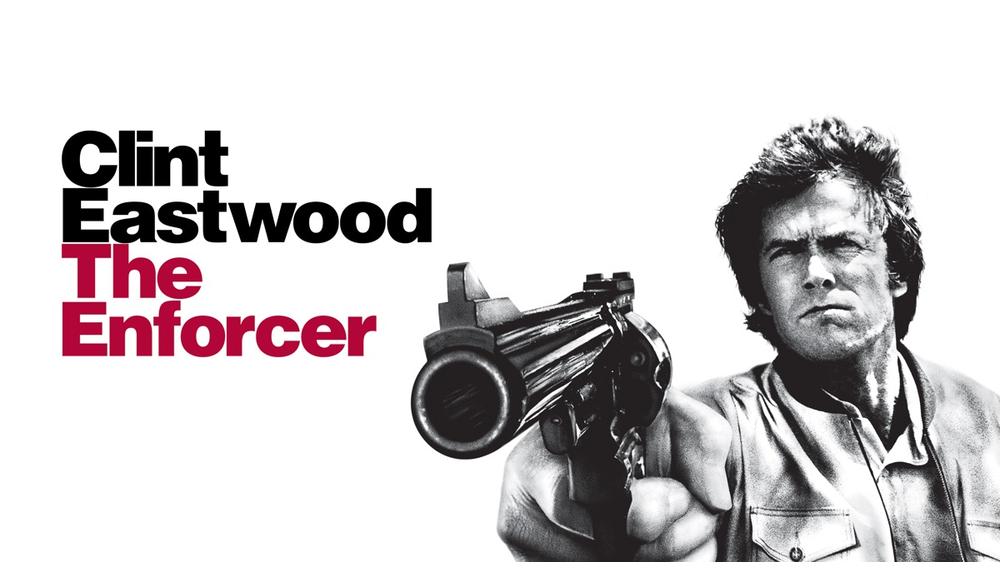
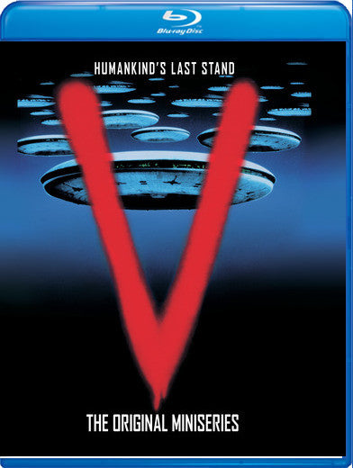

56:51 · 10 OPERE
Ma davvero non ci accorgiamo di venire grossolanamente manipolati?
Il filo del discorso
Una breve trasmissione televisiva, non identificata con titolo e data, fa nascere la domanda del contributo: come ci si accorge che una rappresentazione del mondo orienta il nostro giudizio? Dr Divago descrive un pubblico abituato a ricevere temi, immagini e interpretazioni già collegati fra loro. Il richiamo a Tomasi di Lampedusa apre una riflessione sul cambiamento e sulla continuità. La discussione passa poi al rapporto con chi segue il canale: il relatore propone un esperimento ideale sulla capacità di mantenere un confronto con i fatti, senza fornire uno studio empirico degli ascoltatori. Religione, percezione e matematica introducono la possibilità di restare legati a una convinzione anche davanti a una obiezione. Il Libro di Mormon è discusso in modo fortemente polemico; il racconto su Anton LaVey contiene invece elementi biografici e cinematografici che richiedono un riscontro separato. Un piccolo episodio quotidiano, la difficoltà di inserire fogli in un raccoglitore, porta alla finitezza della percezione. Il roveto di Mosè, le domande rivolte a Giobbe e il rapporto fra Hilbert e Gödel diventano per Dr Divago immagini del limite. La poesia di Quasimodo raccoglie questo passaggio in una meditazione sul tempo della vita. Il ritorno alla televisione riguarda soprattutto la selezione delle notizie su Gaza e il diverso spazio dedicato ad altri conflitti. Dr Divago contesta la sequenza fra mostrare immagini e dichiarare il pubblico stanco di vederle. Un ricordo personale di una alluvione in TV e una annotazione attribuita a Orwell servono a chiedere come si controlli una notizia lontana. La controversia del gennaio 2024 fra il Texas e la amministrazione federale sul filo spinato al confine è un altro esempio della sua critica. Il relatore pone domande sui flussi migratori e sui costi dei viaggi, ma le cifre e le spiegazioni suggerite non risultano dimostrate dal solo racconto. I film di Callaghan introducono una analogia morale fra il salvataggio degli ostaggi e il modo di giudicare una risposta alla violenza. È una lettura del relatore: un episodio cinematografico non sostituisce la valutazione di fatti e obblighi nel conflitto israelo-palestinese. La denuncia dello antisemitismo si intreccia al problema della distinzione fra comprendere un movente e giustificare una azione. Nella parte finale sono nominati Robert Spencer ed Eurabia di Bat Ye’or; la ipotesi di un accordo fra immigrazione e petrolio è presentata da Dr Divago come una lettura trovata in quel libro, non come un documento qui verificato. La immagine conclusiva degli invasori rettiliani, riconoscibile probabilmente in V, riporta al controllo delle rappresentazioni. Il pericolo fondamentale, secondo Dr Divago, è che il singolo perda la possibilità di vedere il mondo in modo autonomo. La scheda conserva questa tesi distinguendola dalle accuse, dagli esempi non identificati e dalle generalizzazioni che la accompagnano. Chiedere le fonti e ricostruire un contesto è parte del problema posto dal contributo, e vale anche per le affermazioni del contributo stesso.
I libri nel discorso

Il Gattopardo
Identificazione probabile
Copertina: Feltrinelli · Universale Economica 900 · 2026
Immagine autentica dell’opera, controllata visivamente; l’edizione di riferimento non è attribuita al filmato.
Tomasi di Lampedusa e la formula sul cambiare per restare sono riconoscibili; titolo del Gattopardo non pronunciato.
Passaggio 3:31 ↗ · Fonti e libro ↗
Libro di Mormon
Copertina: Church Distribution · edizione italiana di riferimento
Copertina reale di riferimento; l’edizione non è identificata come quella citata nel video.
Libro di Mormon e Joseph Smith sono espliciti, con giudizi polemici del relatore distinti dall’identificazione.
Passaggio 11:23 ↗ · Fonti e libro ↗
Rosemary’s Baby (Nastro rosso a New York)
Identificazione probabile
Locandina digitale Paramount · Rosemary’s Baby: Locandina digitale ufficiale Paramount del film 1968: volto di Mia Farrow, fondo verde e carrozzina in silhouette. Titolo del film leggibile. È una immagine dell’opera cinematografica, non la copertina del romanzo e non un riscontro della presunta partecipazione di LaVey.
Immagine autentica dell’opera, controllata visivamente; l’edizione di riferimento non è attribuita al filmato.
Film di Polanski con presunto ruolo satanico di LaVey: probabile Rosemary’s Baby, titolo non pronunciato e partecipazione non certificata.
Passaggio 13:51 ↗ · Fonti e libro ↗
Esodo
Volume di riferimento: San Paolo, 2014 · Nuova Versione dai Testi Antichi · edizione di riferimento
Copertina della Bibbia completa, che contiene l’Esodo. Non è la copertina di un’edizione autonoma del libro biblico; la traduzione non è attribuita al contributo.
Mosè e il roveto ardente: riferimento riconoscibile a Esodo 3, senza edizione identificata.
Passaggio 17:03 ↗ · Fonti e libro ↗Giobbe
Copertina del volume completo: San Paolo, 2014 · Nuova Versione dai Testi Antichi · edizione di riferimento
Giobbe è un libro della Bibbia. L’immagine mostra il volume completo San Paolo di riferimento, non un’edizione autonoma del singolo libro e non una versione identificata nella citazione.
Giobbe e la domanda divina sulla creazione: capitolo38 riconoscibile.
Passaggio 17:15 ↗ · Fonti e libro ↗
Ed è subito sera
Copertina: Mondadori, Oscar moderni, 2016
Copertina della raccolta omonima Ed è subito sera, che contiene la lirica citata. Il record riguarda la singola poesia, non la raccolta intera; edizione del video non identificata.
Quasimodo e il testo della poesia sono espliciti; il riferimento riguarda la singola poesia, non l’intera raccolta omonima.
Passaggio 21:40 ↗ · Fonti e libro ↗
Dirty Harry (Ispettore Callaghan: il caso Scorpio è tuo!)
Immagine promozionale digitale · Dirty Harry: Immagine promozionale digitale di Dirty Harry distribuita da Apple TV per Warner Bros.: titolo rosso e nero, Clint Eastwood e vetro infranto, formato16:9. Il film è del 1971. Non è una copertina di libro, una confezione DVD o una scansione del manifesto originale.
Immagine autentica dell’opera, controllata visivamente; l’edizione di riferimento non è attribuita al filmato.
Primo film della serie di Callaghan, titolo inglese Dirty Harry e1971espliciti.
Passaggio 40:33 ↗ · Fonti e libro ↗
The Enforcer (Cielo di piombo, ispettore Callaghan)
Immagine promozionale digitale · The Enforcer: Immagine promozionale digitale distribuita da Apple TV per Warner Bros., titolo The Enforcer e Clint Eastwood, formato16:9. Identifica il film di James Fargo del 1976; non è una copertina di romanzo né la locandina di un film omonimo.
Immagine autentica dell’opera, controllata visivamente; l’edizione di riferimento non è attribuita al filmato.
The Enforcer è pronunciato; scena del negozio con ostaggi riscontrata da AFI. Data corretta 1976.
Passaggio 40:47 ↗ · Fonti e libro ↗
Eurabia. Come l’Europa è diventata anticristiana, antioccidentale, antiamericana, antisemita
Copertina: Lindau, I Draghi,2024,432 pagine, terza edizione italiana; traduzione del testo di Lucilla Congiu e della nuova prefazione di Antonia Federici. Copertina della edizione 2024, non attribuita al video. Il sottotitolo esprime la tesi dell’autrice, non un fatto adottato dalla scheda.
Immagine autentica dell’opera, controllata visivamente; l’edizione di riferimento non è attribuita al filmato.
Bat Ye’or e Eurabia sono espliciti. Il presunto patto è presentato come lettura trovata nel libro, non fonte primaria acquisita.
Passaggio 51:29 ↗ · Fonti e libro ↗
V (Visitors) · miniserie originale
Identificazione probabile
Blu-ray Warner Archive 2019 · miniserie originale 1983: Confezione Blu-ray V:The Original Miniseries, Warner Archive, uscita27agosto 2019, UPC883929692361,197minuti. Immagine del distributore MovieZyng: grande V rossa e astronavi, confezione blu. Rappresenta la miniserie originale 1983 e non una prima edizione libraria.
Immagine autentica dell’opera, controllata visivamente; l’edizione di riferimento non è attribuita al filmato.
Vecchio telefilm con rettili, invasione e controllo dei media: probabile V. Titolo non riconoscibile nella trascrizione automatica e episodio non identificato.
Passaggio 53:46 ↗ · Fonti e libro ↗